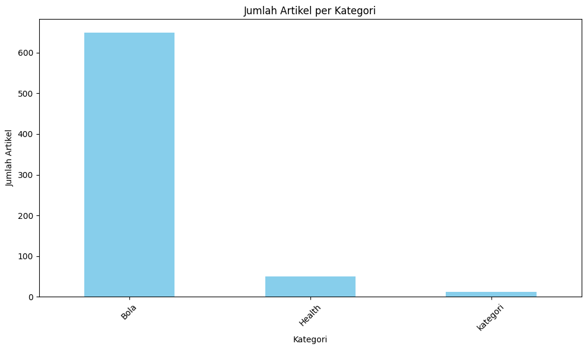

Klasifikasi Brita#
Implementasi#
Library yang digunakan#
!pip install gdown
Requirement already satisfied: gdown in /usr/local/lib/python3.10/dist-packages (5.2.0)
Requirement already satisfied: beautifulsoup4 in /usr/local/lib/python3.10/dist-packages (from gdown) (4.12.3)
Requirement already satisfied: filelock in /usr/local/lib/python3.10/dist-packages (from gdown) (3.16.1)
Requirement already satisfied: requests[socks] in /usr/local/lib/python3.10/dist-packages (from gdown) (2.32.3)
Requirement already satisfied: tqdm in /usr/local/lib/python3.10/dist-packages (from gdown) (4.66.5)
Requirement already satisfied: soupsieve>1.2 in /usr/local/lib/python3.10/dist-packages (from beautifulsoup4->gdown) (2.6)
Requirement already satisfied: charset-normalizer<4,>=2 in /usr/local/lib/python3.10/dist-packages (from requests[socks]->gdown) (3.4.0)
Requirement already satisfied: idna<4,>=2.5 in /usr/local/lib/python3.10/dist-packages (from requests[socks]->gdown) (3.10)
Requirement already satisfied: urllib3<3,>=1.21.1 in /usr/local/lib/python3.10/dist-packages (from requests[socks]->gdown) (2.2.3)
Requirement already satisfied: certifi>=2017.4.17 in /usr/local/lib/python3.10/dist-packages (from requests[socks]->gdown) (2024.8.30)
Requirement already satisfied: PySocks!=1.5.7,>=1.5.6 in /usr/local/lib/python3.10/dist-packages (from requests[socks]->gdown) (1.7.1)
!pip install Sastrawi
Requirement already satisfied: Sastrawi in /usr/local/lib/python3.10/dist-packages (1.0.1)
import gdown
import pandas as pd
import numpy as np
import matplotlib.pyplot as plt
from nltk.corpus import stopwords
from Sastrawi.Stemmer.StemmerFactory import StemmerFactory
import re
from sklearn.feature_extraction.text import TfidfVectorizer
from sklearn.preprocessing import LabelEncoder
from sklearn.model_selection import train_test_split
from sklearn.linear_model import LogisticRegression
from sklearn.metrics import accuracy_score
import pickle
import nltk
nltk.download('stopwords')
[nltk_data] Downloading package stopwords to /root/nltk_data...
[nltk_data] Package stopwords is already up-to-date!
True
# Nama file yang akan dibaca
file_name = 'kompas.csv'
# Membaca file CSV dari folder lokal
df = pd.read_csv(file_name)
# Tampilkan beberapa baris pertama dari file CSV
print(df.head())
judul \
0 Spanyol Vs Serbia: La Roja Kehilangan Lamine Y...
1 Susunan Pemain China vs Indonesia: Asnawi Kapt...
2 Pengamat Sepak Bola Minta Timnas Indonesia Har...
3 Link Live Streaming China Vs Indonesia di Kual...
4 Persib Belum Kalah, Tyronne Rasakan Kompetitif...
waktu \
0 - 15/10/2024, 19:00 WIB
1 - 15/10/2024, 17:47 WIB
2 - 15/10/2024, 15:38 WIB
3 - 15/10/2024, 18:30 WIB
4 - 15/10/2024, 17:01 WIB
url \
0 https://bola.kompas.com/read/2024/10/15/190000...
1 https://bola.kompas.com/read/2024/10/15/174714...
2 https://bola.kompas.com/read/2024/10/15/153800...
3 https://bola.kompas.com/read/2024/10/15/183000...
4 https://bola.kompas.com/read/2024/10/15/170107...
konten kategori
0 KOMPAS.com - Pelatih timnas Spanyol, Luis De L... Bola
1 KOMPAS.com – Susunan pemain timnas Indonesia m... Bola
2 KOMPAS.com - Pengamat sepak bola, Mohamad Kusn... Bola
3 KOMPAS.com - Timnas Indonesia beberapa saat la... Bola
4 BANDUNG, KOMPAS.com - Persib Bandung jadi sala... Bola
Dataset#
df
| judul | waktu | url | konten | kategori | |
|---|---|---|---|---|---|
| 0 | Spanyol Vs Serbia: La Roja Kehilangan Lamine Y... | - 15/10/2024, 19:00 WIB | https://bola.kompas.com/read/2024/10/15/190000... | KOMPAS.com - Pelatih timnas Spanyol, Luis De L... | Bola |
| 1 | Susunan Pemain China vs Indonesia: Asnawi Kapt... | - 15/10/2024, 17:47 WIB | https://bola.kompas.com/read/2024/10/15/174714... | KOMPAS.com – Susunan pemain timnas Indonesia m... | Bola |
| 2 | Pengamat Sepak Bola Minta Timnas Indonesia Har... | - 15/10/2024, 15:38 WIB | https://bola.kompas.com/read/2024/10/15/153800... | KOMPAS.com - Pengamat sepak bola, Mohamad Kusn... | Bola |
| 3 | Link Live Streaming China Vs Indonesia di Kual... | - 15/10/2024, 18:30 WIB | https://bola.kompas.com/read/2024/10/15/183000... | KOMPAS.com - Timnas Indonesia beberapa saat la... | Bola |
| 4 | Persib Belum Kalah, Tyronne Rasakan Kompetitif... | - 15/10/2024, 17:01 WIB | https://bola.kompas.com/read/2024/10/15/170107... | BANDUNG, KOMPAS.com - Persib Bandung jadi sala... | Bola |
| ... | ... | ... | ... | ... | ... |
| 707 | Penurunan Apa Saja yang Terjadi pada Lansia? I... | - 05/09/2024, 18:00 WIB | https://health.kompas.com/read/24I05180000468/... | KOMPAS.com - Seiring bertambahnya umur, setiap... | Health |
| 708 | Apakah Minum Kopi Pahit Bagus untuk Kesehatan?... | - 05/09/2024, 16:00 WIB | https://health.kompas.com/read/24I05160000768/... | KOMPAS.com - Kopi kerap diminum untuk mengatas... | Health |
| 709 | Sering Digunakan untuk Diet, Ini Manfaat Keseh... | - 05/09/2024, 13:37 WIB | https://health.kompas.com/read/24I05133717468/... | KOMPAS.com - Dalam beberapa tahun terakhir, cu... | Health |
| 710 | Kenali "BEACH", Akronim untuk Tanda Peringatan... | - 05/09/2024, 14:00 WIB | https://health.kompas.com/read/24I05140000068/... | KOMPAS.com - Gejala kanker ovarium sering kali... | Health |
| 711 | Apakah Bisa Orang Tanpa Diabetes Mengalami Hip... | - 05/09/2024, 12:00 WIB | https://health.kompas.com/read/24I05120000068/... | KOMPAS.com - Hipoglikemia umum terjadi pada pe... | Health |
712 rows × 5 columns
Jumlah Dataset Per Label#
# Hitung jumlah artikel per kategori
category_counts = df['kategori'].value_counts()
# Tampilkan grafik batang
plt.figure(figsize=(10, 6))
category_counts.plot(kind='bar', color='skyblue')
plt.title('Jumlah Artikel per Kategori')
plt.xlabel('Kategori')
plt.ylabel('Jumlah Artikel')
plt.xticks(rotation=45)
plt.tight_layout()
plt.show()

X = df.drop(columns = 'kategori')
Y = df['kategori']
Label Encoder#
label_encoder = LabelEncoder()
# Fit and transform the labels
df['kategori'] = label_encoder.fit_transform(df['kategori'])
print("\nEncoded Labels:")
df
Encoded Labels:
| judul | waktu | url | konten | kategori | |
|---|---|---|---|---|---|
| 0 | Spanyol Vs Serbia: La Roja Kehilangan Lamine Y... | - 15/10/2024, 19:00 WIB | https://bola.kompas.com/read/2024/10/15/190000... | KOMPAS.com - Pelatih timnas Spanyol, Luis De L... | 0 |
| 1 | Susunan Pemain China vs Indonesia: Asnawi Kapt... | - 15/10/2024, 17:47 WIB | https://bola.kompas.com/read/2024/10/15/174714... | KOMPAS.com – Susunan pemain timnas Indonesia m... | 0 |
| 2 | Pengamat Sepak Bola Minta Timnas Indonesia Har... | - 15/10/2024, 15:38 WIB | https://bola.kompas.com/read/2024/10/15/153800... | KOMPAS.com - Pengamat sepak bola, Mohamad Kusn... | 0 |
| 3 | Link Live Streaming China Vs Indonesia di Kual... | - 15/10/2024, 18:30 WIB | https://bola.kompas.com/read/2024/10/15/183000... | KOMPAS.com - Timnas Indonesia beberapa saat la... | 0 |
| 4 | Persib Belum Kalah, Tyronne Rasakan Kompetitif... | - 15/10/2024, 17:01 WIB | https://bola.kompas.com/read/2024/10/15/170107... | BANDUNG, KOMPAS.com - Persib Bandung jadi sala... | 0 |
| ... | ... | ... | ... | ... | ... |
| 707 | Penurunan Apa Saja yang Terjadi pada Lansia? I... | - 05/09/2024, 18:00 WIB | https://health.kompas.com/read/24I05180000468/... | KOMPAS.com - Seiring bertambahnya umur, setiap... | 1 |
| 708 | Apakah Minum Kopi Pahit Bagus untuk Kesehatan?... | - 05/09/2024, 16:00 WIB | https://health.kompas.com/read/24I05160000768/... | KOMPAS.com - Kopi kerap diminum untuk mengatas... | 1 |
| 709 | Sering Digunakan untuk Diet, Ini Manfaat Keseh... | - 05/09/2024, 13:37 WIB | https://health.kompas.com/read/24I05133717468/... | KOMPAS.com - Dalam beberapa tahun terakhir, cu... | 1 |
| 710 | Kenali "BEACH", Akronim untuk Tanda Peringatan... | - 05/09/2024, 14:00 WIB | https://health.kompas.com/read/24I05140000068/... | KOMPAS.com - Gejala kanker ovarium sering kali... | 1 |
| 711 | Apakah Bisa Orang Tanpa Diabetes Mengalami Hip... | - 05/09/2024, 12:00 WIB | https://health.kompas.com/read/24I05120000068/... | KOMPAS.com - Hipoglikemia umum terjadi pada pe... | 1 |
712 rows × 5 columns
Preprocessing#
Lower Case#
df['lower_text'] = df['konten'].str.lower()
df[['konten', 'lower_text']]
| konten | lower_text | |
|---|---|---|
| 0 | KOMPAS.com - Pelatih timnas Spanyol, Luis De L... | kompas.com - pelatih timnas spanyol, luis de l... |
| 1 | KOMPAS.com – Susunan pemain timnas Indonesia m... | kompas.com – susunan pemain timnas indonesia m... |
| 2 | KOMPAS.com - Pengamat sepak bola, Mohamad Kusn... | kompas.com - pengamat sepak bola, mohamad kusn... |
| 3 | KOMPAS.com - Timnas Indonesia beberapa saat la... | kompas.com - timnas indonesia beberapa saat la... |
| 4 | BANDUNG, KOMPAS.com - Persib Bandung jadi sala... | bandung, kompas.com - persib bandung jadi sala... |
| ... | ... | ... |
| 707 | KOMPAS.com - Seiring bertambahnya umur, setiap... | kompas.com - seiring bertambahnya umur, setiap... |
| 708 | KOMPAS.com - Kopi kerap diminum untuk mengatas... | kompas.com - kopi kerap diminum untuk mengatas... |
| 709 | KOMPAS.com - Dalam beberapa tahun terakhir, cu... | kompas.com - dalam beberapa tahun terakhir, cu... |
| 710 | KOMPAS.com - Gejala kanker ovarium sering kali... | kompas.com - gejala kanker ovarium sering kali... |
| 711 | KOMPAS.com - Hipoglikemia umum terjadi pada pe... | kompas.com - hipoglikemia umum terjadi pada pe... |
712 rows × 2 columns
Cleansing Text#
df['cleaned_text'] = df['lower_text'].apply(lambda text: re.sub(r'\W', ' ', text))
df[['lower_text', 'cleaned_text']]
| lower_text | cleaned_text | |
|---|---|---|
| 0 | kompas.com - pelatih timnas spanyol, luis de l... | kompas com pelatih timnas spanyol luis de l... |
| 1 | kompas.com – susunan pemain timnas indonesia m... | kompas com susunan pemain timnas indonesia m... |
| 2 | kompas.com - pengamat sepak bola, mohamad kusn... | kompas com pengamat sepak bola mohamad kusn... |
| 3 | kompas.com - timnas indonesia beberapa saat la... | kompas com timnas indonesia beberapa saat la... |
| 4 | bandung, kompas.com - persib bandung jadi sala... | bandung kompas com persib bandung jadi sala... |
| ... | ... | ... |
| 707 | kompas.com - seiring bertambahnya umur, setiap... | kompas com seiring bertambahnya umur setiap... |
| 708 | kompas.com - kopi kerap diminum untuk mengatas... | kompas com kopi kerap diminum untuk mengatas... |
| 709 | kompas.com - dalam beberapa tahun terakhir, cu... | kompas com dalam beberapa tahun terakhir cu... |
| 710 | kompas.com - gejala kanker ovarium sering kali... | kompas com gejala kanker ovarium sering kali... |
| 711 | kompas.com - hipoglikemia umum terjadi pada pe... | kompas com hipoglikemia umum terjadi pada pe... |
712 rows × 2 columns
Tokenisasi#
df['tokenized_text'] = df['cleaned_text'].apply(lambda text: text.split())
df[['cleaned_text', 'tokenized_text']]
| cleaned_text | tokenized_text | |
|---|---|---|
| 0 | kompas com pelatih timnas spanyol luis de l... | [kompas, com, pelatih, timnas, spanyol, luis, ... |
| 1 | kompas com susunan pemain timnas indonesia m... | [kompas, com, susunan, pemain, timnas, indones... |
| 2 | kompas com pengamat sepak bola mohamad kusn... | [kompas, com, pengamat, sepak, bola, mohamad, ... |
| 3 | kompas com timnas indonesia beberapa saat la... | [kompas, com, timnas, indonesia, beberapa, saa... |
| 4 | bandung kompas com persib bandung jadi sala... | [bandung, kompas, com, persib, bandung, jadi, ... |
| ... | ... | ... |
| 707 | kompas com seiring bertambahnya umur setiap... | [kompas, com, seiring, bertambahnya, umur, set... |
| 708 | kompas com kopi kerap diminum untuk mengatas... | [kompas, com, kopi, kerap, diminum, untuk, men... |
| 709 | kompas com dalam beberapa tahun terakhir cu... | [kompas, com, dalam, beberapa, tahun, terakhir... |
| 710 | kompas com gejala kanker ovarium sering kali... | [kompas, com, gejala, kanker, ovarium, sering,... |
| 711 | kompas com hipoglikemia umum terjadi pada pe... | [kompas, com, hipoglikemia, umum, terjadi, pad... |
712 rows × 2 columns
Stopword Removal#
stop_words = set(stopwords.words('indonesian'))
df['no_stopwords_text'] = df['tokenized_text'].apply(lambda tokens: [word for word in tokens if word not in stop_words])
df[['tokenized_text', 'no_stopwords_text']]
| tokenized_text | no_stopwords_text | |
|---|---|---|
| 0 | [kompas, com, pelatih, timnas, spanyol, luis, ... | [kompas, com, pelatih, timnas, spanyol, luis, ... |
| 1 | [kompas, com, susunan, pemain, timnas, indones... | [kompas, com, susunan, pemain, timnas, indones... |
| 2 | [kompas, com, pengamat, sepak, bola, mohamad, ... | [kompas, com, pengamat, sepak, bola, mohamad, ... |
| 3 | [kompas, com, timnas, indonesia, beberapa, saa... | [kompas, com, timnas, indonesia, melanjutkan, ... |
| 4 | [bandung, kompas, com, persib, bandung, jadi, ... | [bandung, kompas, com, persib, bandung, salah,... |
| ... | ... | ... |
| 707 | [kompas, com, seiring, bertambahnya, umur, set... | [kompas, com, seiring, bertambahnya, umur, ora... |
| 708 | [kompas, com, kopi, kerap, diminum, untuk, men... | [kompas, com, kopi, kerap, diminum, mengatasi,... |
| 709 | [kompas, com, dalam, beberapa, tahun, terakhir... | [kompas, com, cuka, apel, madu, pilihan, popul... |
| 710 | [kompas, com, gejala, kanker, ovarium, sering,... | [kompas, com, gejala, kanker, ovarium, kali, m... |
| 711 | [kompas, com, hipoglikemia, umum, terjadi, pad... | [kompas, com, hipoglikemia, penderita, diabete... |
712 rows × 2 columns
Stemming#
# Membuat objek Stemmer dari Sastrawi
factory = StemmerFactory()
stemmer = factory.create_stemmer()
# Menggunakan Sastrawi untuk stemming teks
df['stemmed_text'] = df['no_stopwords_text'].apply(lambda tokens: [stemmer.stem(word) for word in tokens])
df['final_text'] = df['stemmed_text'].apply(lambda x: ' '.join(x))
df[['no_stopwords_text', 'final_text']]
---------------------------------------------------------------------------
KeyboardInterrupt Traceback (most recent call last)
<ipython-input-14-586d3805391e> in <cell line: 6>()
4
5 # Menggunakan Sastrawi untuk stemming teks
----> 6 df['stemmed_text'] = df['no_stopwords_text'].apply(lambda tokens: [stemmer.stem(word) for word in tokens])
7 df['final_text'] = df['stemmed_text'].apply(lambda x: ' '.join(x))
8
/usr/local/lib/python3.10/dist-packages/pandas/core/series.py in apply(self, func, convert_dtype, args, by_row, **kwargs)
4922 args=args,
4923 kwargs=kwargs,
-> 4924 ).apply()
4925
4926 def _reindex_indexer(
/usr/local/lib/python3.10/dist-packages/pandas/core/apply.py in apply(self)
1425
1426 # self.func is Callable
-> 1427 return self.apply_standard()
1428
1429 def agg(self):
/usr/local/lib/python3.10/dist-packages/pandas/core/apply.py in apply_standard(self)
1505 # Categorical (GH51645).
1506 action = "ignore" if isinstance(obj.dtype, CategoricalDtype) else None
-> 1507 mapped = obj._map_values(
1508 mapper=curried, na_action=action, convert=self.convert_dtype
1509 )
/usr/local/lib/python3.10/dist-packages/pandas/core/base.py in _map_values(self, mapper, na_action, convert)
919 return arr.map(mapper, na_action=na_action)
920
--> 921 return algorithms.map_array(arr, mapper, na_action=na_action, convert=convert)
922
923 @final
/usr/local/lib/python3.10/dist-packages/pandas/core/algorithms.py in map_array(arr, mapper, na_action, convert)
1741 values = arr.astype(object, copy=False)
1742 if na_action is None:
-> 1743 return lib.map_infer(values, mapper, convert=convert)
1744 else:
1745 return lib.map_infer_mask(
lib.pyx in pandas._libs.lib.map_infer()
<ipython-input-14-586d3805391e> in <lambda>(tokens)
4
5 # Menggunakan Sastrawi untuk stemming teks
----> 6 df['stemmed_text'] = df['no_stopwords_text'].apply(lambda tokens: [stemmer.stem(word) for word in tokens])
7 df['final_text'] = df['stemmed_text'].apply(lambda x: ' '.join(x))
8
<ipython-input-14-586d3805391e> in <listcomp>(.0)
4
5 # Menggunakan Sastrawi untuk stemming teks
----> 6 df['stemmed_text'] = df['no_stopwords_text'].apply(lambda tokens: [stemmer.stem(word) for word in tokens])
7 df['final_text'] = df['stemmed_text'].apply(lambda x: ' '.join(x))
8
/usr/local/lib/python3.10/dist-packages/Sastrawi/Stemmer/CachedStemmer.py in stem(self, text)
18 stems.append(self.cache.get(word))
19 else:
---> 20 stem = self.delegatedStemmer.stem(word)
21 self.cache.set(word, stem)
22 stems.append(stem)
/usr/local/lib/python3.10/dist-packages/Sastrawi/Stemmer/Stemmer.py in stem(self, text)
25
26 for word in words:
---> 27 stems.append(self.stem_word(word))
28
29 return ' '.join(stems)
/usr/local/lib/python3.10/dist-packages/Sastrawi/Stemmer/Stemmer.py in stem_word(self, word)
34 return self.stem_plural_word(word)
35 else:
---> 36 return self.stem_singular_word(word)
37
38 def is_plural(self, word):
/usr/local/lib/python3.10/dist-packages/Sastrawi/Stemmer/Stemmer.py in stem_singular_word(self, word)
82 """Stem a singular word to its common stem form."""
83 context = Context(word, self.dictionary, self.visitor_provider)
---> 84 context.execute()
85
86 return context.result
/usr/local/lib/python3.10/dist-packages/Sastrawi/Stemmer/Context/Context.py in execute(self)
35
36 #step 1 - 5
---> 37 self.start_stemming_process()
38
39 #step 6
/usr/local/lib/python3.10/dist-packages/Sastrawi/Stemmer/Context/Context.py in start_stemming_process(self)
78
79 #step 4, 5
---> 80 self.remove_prefixes()
81 if self.dictionary.contains(self.current_word):
82 return
/usr/local/lib/python3.10/dist-packages/Sastrawi/Stemmer/Context/Context.py in remove_prefixes(self)
87 def remove_prefixes(self):
88 for i in range(3):
---> 89 self.accept_prefix_visitors(self.prefix_pisitors)
90 if self.dictionary.contains(self.current_word):
91 return
/usr/local/lib/python3.10/dist-packages/Sastrawi/Stemmer/Context/Context.py in accept_prefix_visitors(self, visitors)
108 removalCount = len(self.removals)
109 for visitor in visitors:
--> 110 self.accept(visitor)
111 if self.dictionary.contains(self.current_word):
112 return self.current_word
/usr/local/lib/python3.10/dist-packages/Sastrawi/Stemmer/Context/Context.py in accept(self, visitor)
95
96 def accept(self, visitor):
---> 97 visitor.visit(self)
98
99 def accept_visitors(self, visitors):
/usr/local/lib/python3.10/dist-packages/Sastrawi/Stemmer/Context/Visitor/AbstractDisambiguatePrefixRule.py in visit(self, context)
13 for disambiguator in self.disambiguators:
14 result = disambiguator.disambiguate(context.current_word)
---> 15 if context.dictionary.contains(result):
16 break
17
KeyboardInterrupt:
x = df['konten'].values
y = df['kategori'].values
Split Data#
Xtrain, Xtest,Ytrain,Ytest = train_test_split(x,y,test_size=0.2,random_state=2)
TF-IDF#
vect = TfidfVectorizer()
X = vect.fit_transform(Xtrain)
X_array = vect.transform(Xtrain)
X_array.toarray()
array([[0. , 0. , 0.01719503, ..., 0. , 0. ,
0. ],
[0. , 0. , 0. , ..., 0. , 0. ,
0. ],
[0. , 0. , 0.0155655 , ..., 0. , 0. ,
0. ],
...,
[0. , 0. , 0.01550865, ..., 0. , 0. ,
0. ],
[0. , 0. , 0. , ..., 0. , 0. ,
0. ],
[0. , 0. , 0. , ..., 0. , 0. ,
0. ]])
fitur_kata = vect.get_feature_names_out()
print("Jumlah fitur kata dari hasil TF-IDF:", len(fitur_kata))
Jumlah fitur kata dari hasil TF-IDF: 5672
with open('tfidf_vectorizer.pkl', 'wb') as f:
pickle.dump(vect, f) # Menyimpan vectorizer
with open('tfidf_matrix.pkl', 'wb') as f:
pickle.dump(X, f) # Menyimpan hasil transformasi (TF-IDF matrix)
Melatih Model Logistic Regression#
# Membuat model Logistic Regression
model = LogisticRegression()
# Melatih model dengan data pelatihan
model.fit(X, Ytrain)
LogisticRegression()In a Jupyter environment, please rerun this cell to show the HTML representation or trust the notebook.
On GitHub, the HTML representation is unable to render, please try loading this page with nbviewer.org.
LogisticRegression()
# Save the model to a file using pickle
with open('logistic_model', 'wb') as f:
pickle.dump(model, f)
Testing Data Baru#
# Load TF-IDF dan model logistic regression dari file pickle
with open("tfidf_vectorizer.pkl", "rb") as f:
tfidf_vectorizer = pickle.load(f)
with open("logistic_model", "rb") as f:
model = pickle.load(f)
# Transformasi data baru dengan TF-IDF yang sudah dilatih
X_baru = tfidf_vectorizer.transform(Xtest)
# Lakukan prediksi dengan model logistic regression
prediksi = model.predict(X_baru)
Akurasi#
# Tampilkan hasil prediksi
print("Prediksi:", prediksi)
Prediksi: [0 1 0 1 0 0 1 0 0 0 0 0 0 0 1 0 0 0 1 0 0 0 0 0 0 1 1 0 0 0 0]
accuracy = accuracy_score(Ytest, prediksi)
print(f"Akurasi: {accuracy * 100:.2f}%")
Akurasi: 96.77%